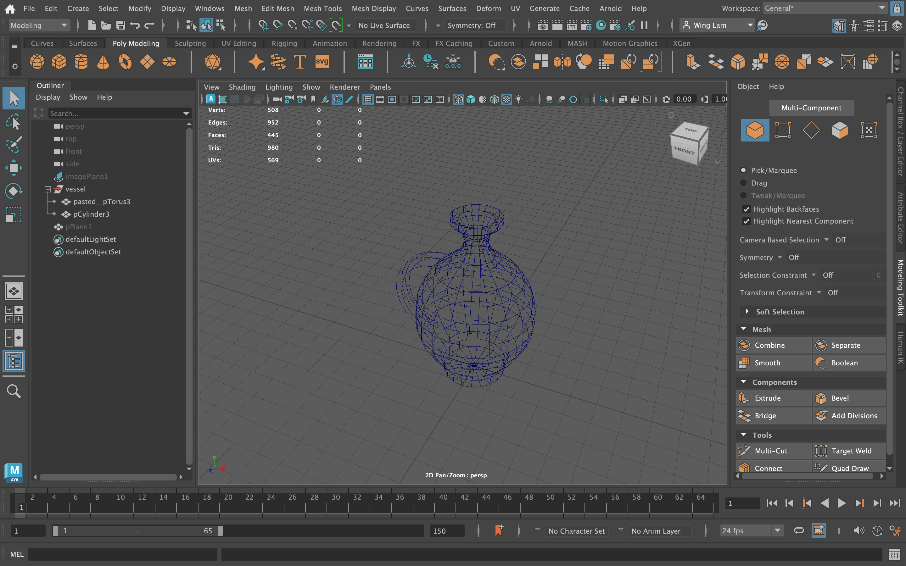
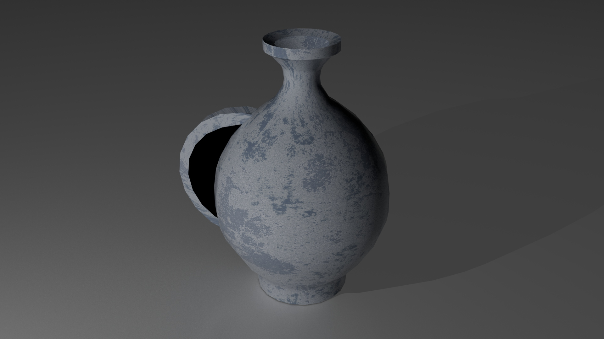
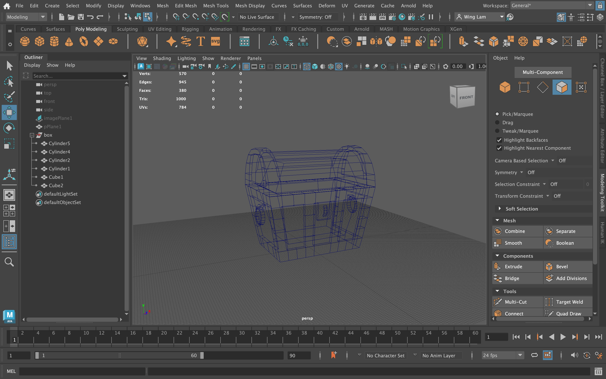
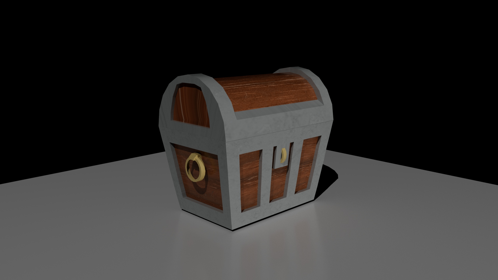
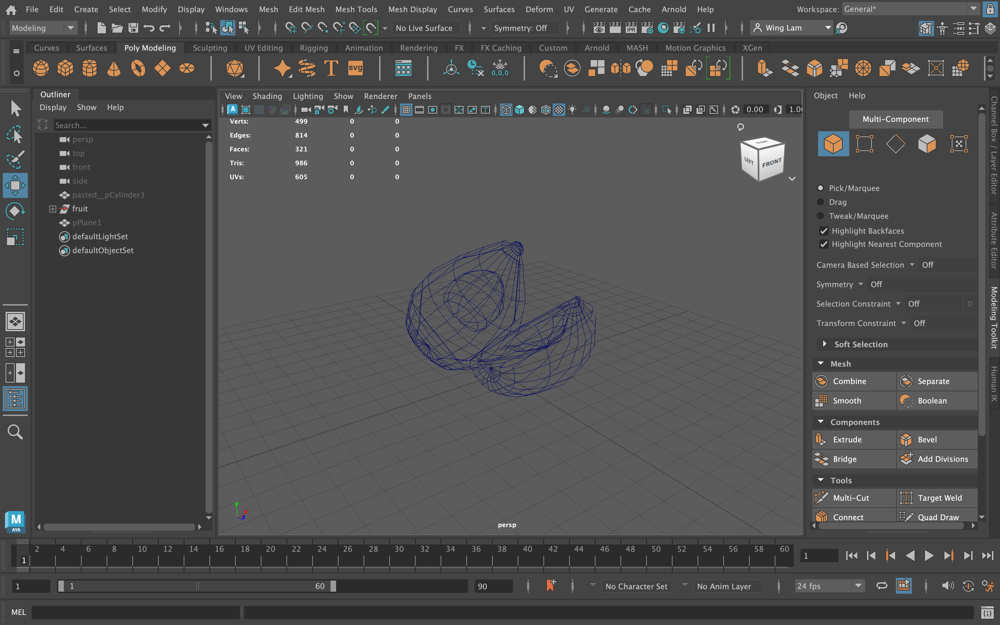
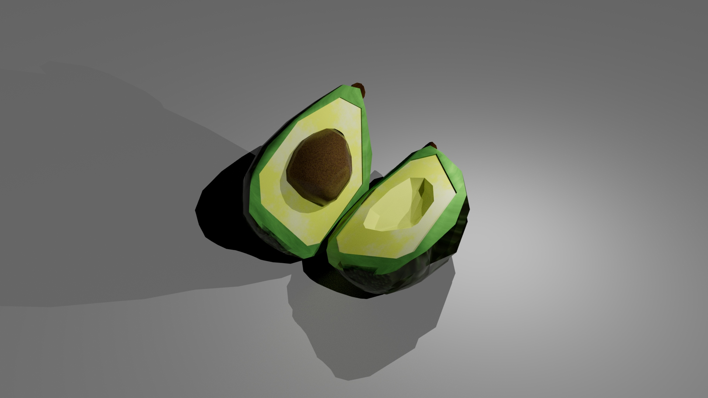

Overview
A small third-person Unity scene set on a playful pirate island. I handled level layout, simple interactions, and imported three low-poly Maya assets (vessel, box, fruit) into the world.
Role & Tools
- Level dressing, triggers, UI cues
- Maya (model + UV), Unity import
- Cinemachine for a short intro fly-through
Models & Renders





